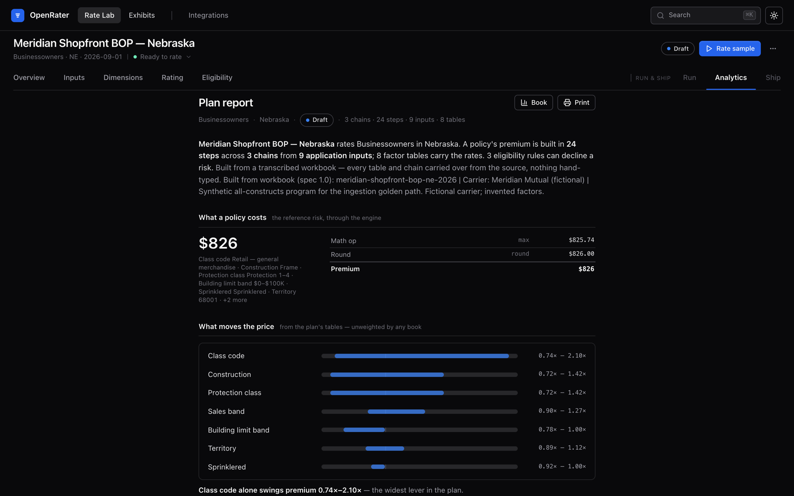
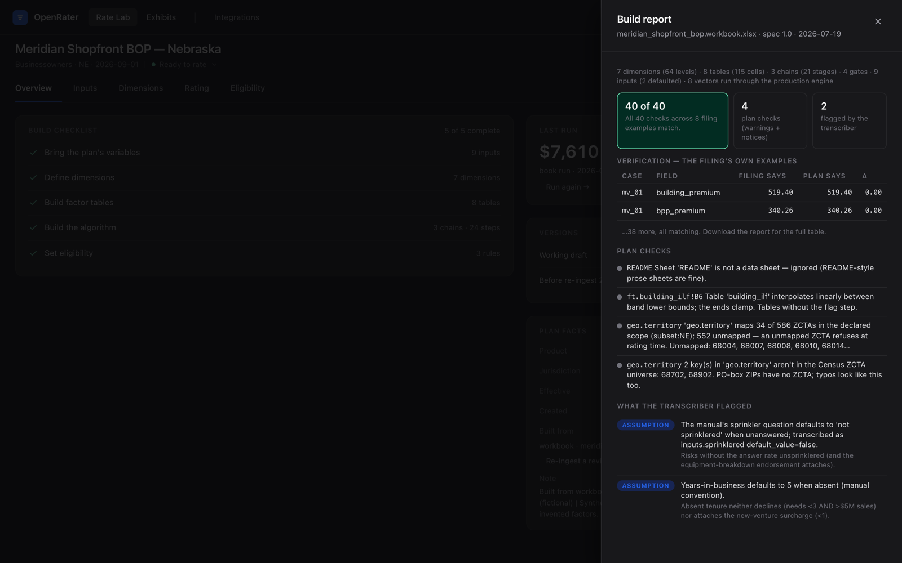

Open source · local-first · Apache-2.0
Turn a rate filing into a working rating engine — with a citation for every number.
P&C rating manuals are hundreds of pages of factor tables, rules, and a rating order, filed as PDFs. OpenRater makes them executable: an AI transcribes the filing into a reviewable Excel workbook, a deterministic compiler builds the engine, and every factor traces back to its page.1

The loop
filing → workbook → plan → premiumThe rating manual you are entitled to use — factor tables, classification rules, territory definitions, the rating order. You bring the document. OpenRater never fetches filings.
youThe AI transcribes into a spec'd workbook — every cell cites its source page, unsupported constructs land in a gaps-and-assumptions sheet instead of being approximated. An ordinary Excel file an actuary can open, audit, and correct.
ai transcribes · you reviewA deterministic compiler validates and builds the executable plan — zero AI from here on. The filing's own worked examples run as acceptance tests; the build report carries page-level provenance for every factor.
platformWalk any risk through the algorithm step by step, quote one risk in chat, serve a local quote API, or re-rate a whole book from CSV. Same inputs, same answer, every time.
platformWhy trust it
trust is a paper trail, not a promiseEvery number has a citation p. n
The build report records where each factor came from, to the page. Re-ingesting a revised workbook shows a cell-grain diff before anything is applied.
The filing tests itself
Worked examples from the source document become acceptance tests in the
test_cases sheet — correctness is pinned against the filing, not against
anyone's opinion.
Refuse, never improvise
An input the plan can't rate is a structured, visible error — never a silent neutral factor, never a plausible-but-wrong premium.
A human seat, built in
The workbook in the middle of the pipeline is the review gate: transcription stops there until a person has looked. Corrections re-enter as a diff, not a mystery.
The build report says so — or it says no.
Each build replays the filing's worked examples through the production engine and prints the ledger: 40 of 40 checks match to the penny, warnings are itemized, and everything the transcriber assumed is flagged for review — before the first real risk is rated.

Install
one signed file · no terminalGet Claude Desktop
Install Claude Desktop (Mac or Windows) and sign in. It's the only prerequisite.
Download one file
Grab the .mcpb for your machine from the
latest release —
or use the buttons above.
Drag it in
In Claude Desktop, open Settings → Extensions and drag the file in. Signed and notarized — no warnings.
Ask Claude
Start a new chat and ask:"What is OpenRater? Show me." The engine starts locally, the review app opens in your browser, and a three-minute tour begins on the bundled synthetic program.
| Mac · Apple silicon (M-series) | …darwin-arm64.mcpb |
| Mac · Intel | …darwin-x64.mcpb |
| Windows | …win32-x64.mcpb |
Not sure which Mac you have? Apple menu → About This Mac — "Chip" means Apple silicon, "Processor" means Intel. macOS builds are Developer ID-signed and notarized; Windows builds are signed via Azure Trusted Signing.
Three ways to use it
Claude Desktop + the extension. The full loop in chat — transcribe, validate, build, review, quote, re-rate — with the review UI one click away. No terminal required.
Claude Code, or any MCP client. The same loop, scriptable, over 18 MCP tools — see AGENTS.md.
Self-hosted. The REST API, the deterministic scoring engine, and the integration-events ledger, headless — a Docker Compose kit ships in deploy/.